前后端数据交互、HTTP 协议
一、前后端通信
前后端通信是什么 ？
- 前后端通信指：前端和后端数据交互的过程。即 浏览器和服务器之间数据交互的过程。
为什么需要前后端通信 - 因为，不论前端还是后端，它们彼此都离不开对方。有时前端需要后端发送过来的数据，有时后端也需要前端发送来的数据。所以，前后端通信就是前端和后端各取所需的一个过程。
- 前后端通信指：前端和后端数据交互的过程。即 浏览器和服务器之间数据交互的过程。
后端向前端发送数据
如：访问一个网页
- 打开任意在线网页后，如：https://www.icodingedu.com/
- 在浏览器中按 “F12” 或 右键 检查元素，打开浏览器的开发者工具
- 将面板切换至 “Network” -> 刷新网页，注意观察发生了什么
在刷新网页的过程中，浏览器和服务器之间就完成了一次通信，也就是完成一次数据之间的交互。
- 这里主要是后端向前端发送的数据，包括：HTML 文件、CSS、JS、图片 等，我们只要能够看到的都是后端发送过来的。因为浏览器要想展示一个网页给到用户查看，就需要当前网页相关的文件，而这些文件本身就保存在服务器中的。
- 当我们通过网址访问网页的时候，这时浏览器和服务器就会展开通信，浏览器向服务器请求网页相关文件，服务器就会将浏览器请求的东西发送给它，然后就会通过这些文件进行渲染和展示网页了。
这就是典型的 后端向前端发送数据 的应用
- 前端向后端发送数据
典型应用场景，用户登录注册、站内搜索、表单提交等
- 用户登录，前端向后端发送数据
- 用户输入用户名、密码，点击 “登录” 后，数据就会被发送到后端；
- 后端收到数据后，就会判断用户名、密码是否正确，然后将判断结果告诉前端；
- 前端拿到返回的结果后，就可以进一步操作了，比如：跳转到登录前的页面。
- 前后端通信的过程
首先我们需要明白，地球不是围绕着某一个人转的。同理 服务器也不是围绕着某一个浏览器来转的，它可以服务相当多的浏览器。
也就是说浏览器和服务器通信时，一般情况下都是浏览器主动联系服务器。如：一般都是你主动打电话给 110 报警，没见过 110 主动打电话给你来接警的，是一个道理。
- 所以，在服务器和浏览器之前通信的时候，是有一个主动和被动的关系。如下图所示
- 需要通信时，浏览器就会主动发送一个请求给到服务器，如果有数据也会在请求中把数据携带上
- 服务器在接收到请求后，会按照请求给出响应（即：回应浏览器的请求），如果服务端有数据也会在随着响应一起发送到浏览器端
- 前后端通信是在 “请求 - 响应” 中完成的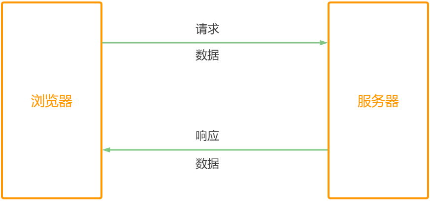
- 基础概念的理解
- 前端：浏览器端
- 客户端：只要能和服务器通信的就叫客户端
如：命令行工具（客户端），输入
curl https://www.icodingedu.com/；包括我们日常，安装的很多 桌面端软件，基本都属于 客户端 - 后端：服务器端
二、前后端的通信方式
使用浏览器访问网页
- 在浏览器地址栏输入网址，按下回车
- 在打开网页的过程中，浏览器和服务器之间就完成了一次通信
解析 HTML 标签
浏览器在解析
HTML标签的时候，遇到一些特殊的标签，会再次向服务器发送请求。如下标签：
<link>标签<img>标签<script> </script>标签 ，如 ：使用 JSONP 跨域，就会用到 script 标签<iframe>标签
还有一些标签，浏览器解析的时候，不会向服务器发送请求，但用户可以使用它们向服务器发送请求。如下
<a href="https://www.icodingedu.com/"></a>标签，点击 a 标签时，就会向 艾编程的服务器发送请求<form>标签，form表单提交时，就会向服务器发送请求
- Ajax 和 Fetch
这个我们在后边的课程中会详细讲解，它们也是前后端的通信方式之一，先做了解即可。
- 与 Ajax 类似，Fetch 也是前后端通信的一种方式。Fetch 要比 Ajax 年轻一些
- Fetch 是 Ajax（XMLHttpRequest）的一种替代方案，它是基于 Promise 的
Fetch 缺点
- Fetch 的兼容性没有 Ajax 好
- Fetch 原生没有提供 abort 终止请求方式、timeout 请求超时方式，如果需要用到这些时，需要自己来实现。
目前我们先做了解即可 ！
三、HTTP 协议
HTTP 是什么 ？
HTTP全称：Hyper Text Transfer Protocol超文本传输协议（HTTP 是这几个英文单词的首字母）我们之前有学习过的
HTML是 超文本标记语言- 超文本： 原先一个个单一的文本，通过超链接将其联系起来。由原先的单一的文本变成了可无限延伸、扩展的超级文本，立体文本。
- 传输协议： 传输，如将请求传输过去、响应传输回来 等。协议即在传输的过程中需要遵守的规范
我们网页中的 HTML、JS、CSS、图片、字体、音频、视频 等等文件，都是通过 HTTP （超文本传输协议）在服务器和浏览器之间传输
- 每一次前后端通信，前端需要主动向后端发出请求，后端接收到前端的请求后，可以给出响应
- 因此，HTTP 是一个请求、响应协议
HTTP 请求响应的过程
在浏览器的地址栏中输入网址，回车一下后，发生了什么 ？
- HTTP 请求响应的简单过程：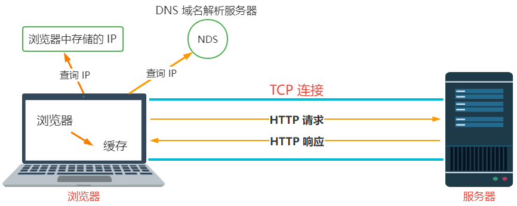
同时，也可以打开浏览器的控制台 “Network” 也可实时查看到整个过程。
- 概括说：
浏览器向服务器发送了 HTTP 请求，服务器端又向浏览器发送了 HTTP 响应，总体就这一个过程。详细描述如下：
当我们在浏览器中访问网页时，浏览器先到自己的缓存中查询，如有缓存就不必向服务器发送请求，直接从缓存中读取。
但，有时候即便浏览器找到了缓存，它还需要考虑是否过期，这时就需要向服务器发送一个请求来询问缓存是否过期，服务器发送响应是否能用。这个过程就会涉及到浏览器和服务器之间的通信。具体是如何通讯的呢 ？
在浏览器地址栏：输入网址
https://www.arryblog.com/是无法直接找到 服务器在哪里的。因为服务器是有一个位置信息（即：IP 地址）浏览器会先在内部通过网址查询对应的 IP，找到了 IP ，直接使用 IP（类似于门牌号） 和服务器建立链接 ，这个链接叫** TCP 连接**HTTP 是建立在 TCP 连接基础之上的，连接建立之后，就相当于 浏览器和服务器之间就开通了一条通路（上图蓝色部分），浏览器的请求和服务器的响应都在这个通路中完成。
如果在浏览器中能查到网址对应的 IP，说明之前有访问过，浏览器内部会保存一份。
如果之前没有访问过，浏览器也就没有记录过，本地就查不到，这时就需要到 DNS 域名解析服务器中去查询
IP（这个远程服务器会比较慢），查到之后会先在浏览器中存储一份，下次再访问时，就会在浏览器中查到对应的 IP 了，这样速度就会非常快。这也是为什么，第一次打开一个网站时，会非常慢。第二次打开时就会快很多。
其中原因之一，就是我们再次访问网站时，就不用再次去 DNS 域名解析服务器中去查询 IP 了。而是直接用本地浏览器中的
- HTTP 报文
HTTP 报文是什么 ？
- 浏览器向服务器发送请求时，请求本身就是信息，叫请求报文
- 服务器向浏览器发送响应时，传输的信息，叫响应报文
因此，我们讲的 HTTP 报文就是：请求报文 和 响应报文
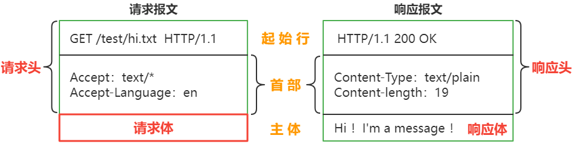
- HTTP 报文格式
- 请求：请求头（起始行 + 首部），请求体
- 响应：响应头（起始行 + 首部），响应体
注： GET请求，没有请求体，数据通过请求头携带POST请求，有请求体，数据通过请求体携带；它既有请求头也有请求体，都可以携带数据，但在实际开发中，一般使用请求体携带数据
- 在浏览器中访问网页，点开 ”Network“ 查看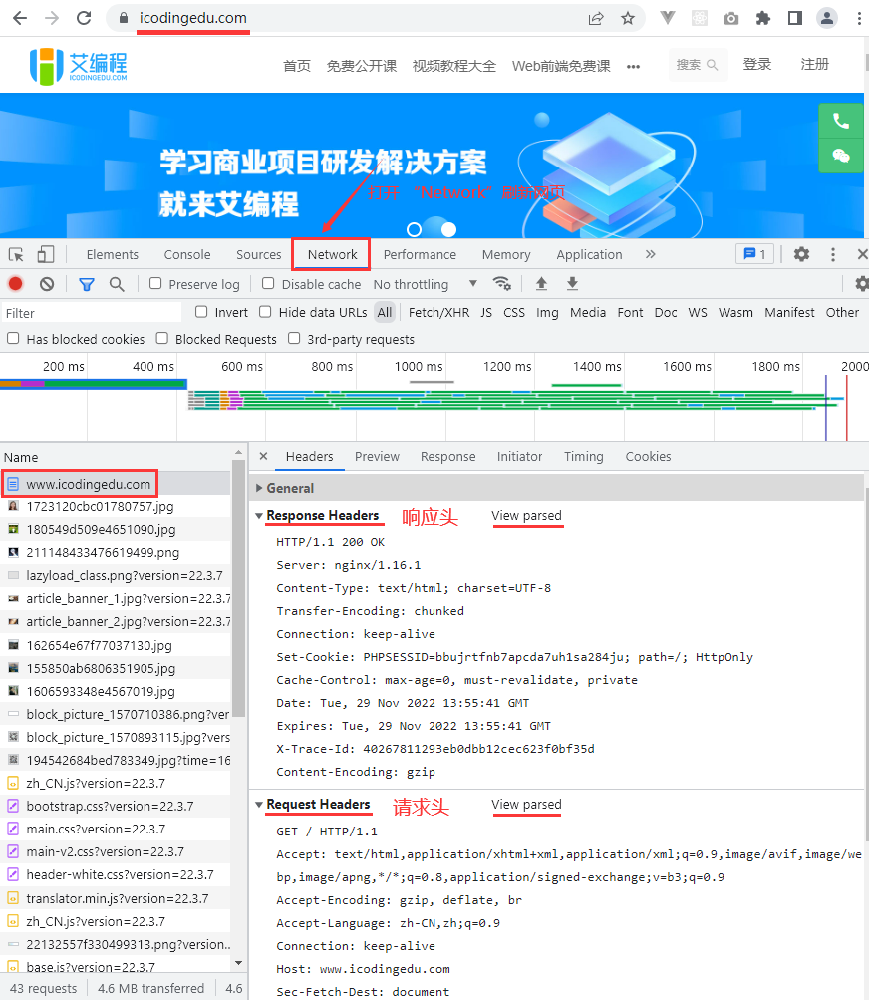
四、HTTP 方法
常用的 HTTP 方法
浏览器发送请求时采用的方法和响应无关
- 常见的方法有：GET、POST、PUT、DELETE，用来定义对于资源采取什么样的操作的，有各自的语义
HTTP 方法的语义
常用的这 4 种方法，行业中一般称之为”CRUD”增删改查，我们在实际开发中要清楚后端在说什么 ！
CRUD：增加create、查询read/retrieve、修改update、删除delete
| HTTP 方法 | 描述 |
|---|---|
| GET | 获取数据：获取资源（文件），多用于获取或查询数据 等 |
| POST | 创建数据：多用于增加数据、注册 等 |
| PUT | 更新数据：多用于 修改信息，修改密码 等 |
| DELETE | 删除数据：多用于删除数据，删除商品信息 … 等 |
- 这些方法虽然有各自的语义，但并不是强制性的
- RESTful 接口设计
RESTful是一种接口设计风格，充分利用HTTP方法的语义- 如：我们需要对用户信息，进行增删改查，如何设计接口
- 常规方式
需求 HTTP 方法 接口地址 根据 ID 获取个人信息 GET https://icoding.com/api/getUser?id=1 注册新用户 POST https://icoding.com/api/addUser 修改用户信息 POST https://icoding.com/api/modifyUser 删除一个用户信息 POST https://icoding.com/api/deleteUser
注：
- 以上方式正常使用没有问题，但会显得非常麻烦，需要通过名称来进行区分具体的功能
- 使用
RESTful接口设计风格- 充分利用
HTTP方法的语义。如下需求 HTTP方法RESTful风格接口地址根据 ID 获取个人信息 GET https://icoding.com/api/user?id=1 注册新用户 POST https://icoding.com/api/user 修改用户信息 PUT https://icoding.com/api/user 删除一个用户信息 DELETE https://icoding.com/api/user
- 充分利用
注：
- 我们在实际开发中
RESTful接口设计风格会非常常见，大部分时间是由后端开发人员主导，前端开发会参与，讨论，必要时会提出意见和建议。
- GET 和 POST 方法的对比
- 语义不同
HTTP方法 描述 GET 获取数据 POST 创建数据 - 发送数据不同
HTTP 方法 描述 GET 通过地址在请求头中携带数据；能携带的数据量和地址的长度有关系，一般最多就几 K POST 既可以通过地址在请求头中携带数据（一般实际开发中不会这么做），也可以通过请求体携带数据；能携带的数据量理论上是无限的 结论 携带少量数据，可以使用 GET 请求，大量的数据可以使用 POST 请求 - 缓存不同
HTTP 方法 描述 GET 可以被缓存；因为，GET 请求连同它请求的数据都会被浏览器缓存；如：我们访问过的网站，就会被浏览器记住（输入前几个字母就会自动补全） POST 不会被缓存；因为 POST 请求的数据一般不通过地址来发送请求，而是通过请求体来发送，所以不会被缓存 - 安全性
GET 和 POST 本质上都不安全，但为什么很多人说 POST 会比 GET 更安全呢 ？
- 因为 GET 是在浏览器的地址栏中明文显示传输的（也可以在历史记录找到对应的信息，如果是密码的话），而 POST 是通过请求体发送的，我们看不到。
注：
- 发送密码或其他敏感信息时不要使用 GET，主要是避免直接被他人窥屏或通过历史记录找到你的密码，从这个点来说 POST 确实会比 GET 安全一点。
- HTTP 状态码
- 完整 HTTP 响应状态码，详细可查看官方文档解读
HTTP 状态码是什么 ？
- HTTP 状态码是定义服务器对请求的处理结果，是服务器返回的。
- HTTP 状态码的语义（常见状态码）
100 ~ 199 状态码
表示消息：代表请求已被接受，需要继续处理。
- 如：使用
websocket会经常看到 - 我们经常使用的
Live Server插件保存代码会自动刷新页面，就是使用websocket来实现的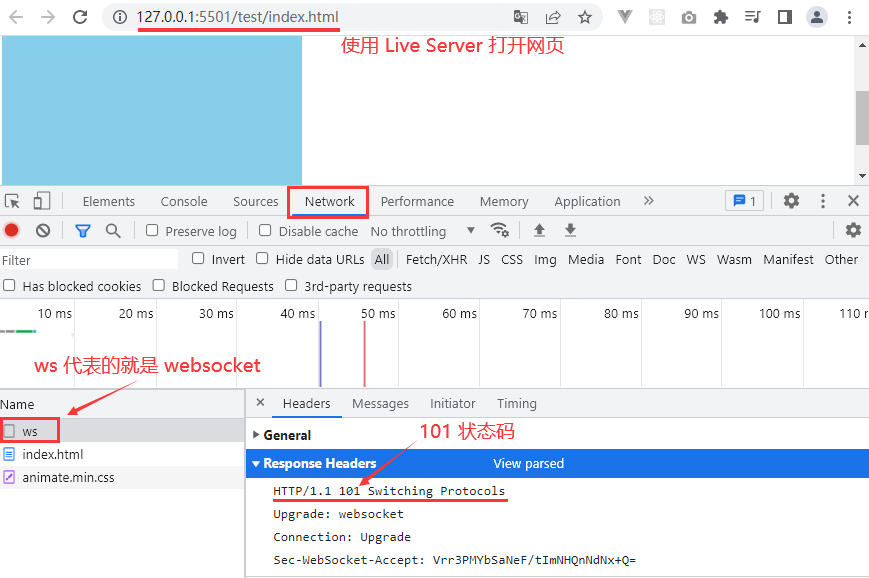
- 如：使用
200 ~ 299 状态码
表示成功响应
300 ~ 399 状态码
表示重定向
- 如：输入
https://arryblog.com跳转至https://www.arryblog.com发生了 301 永久重定向 - 重定向的位置一般都会被浏览器缓存，下次输入会自动跳转，除非我们手动把浏览器缓存清空，否则会默认跳转过去。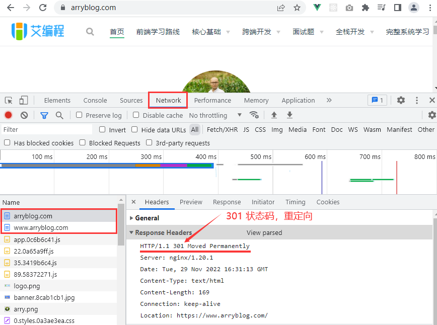
- 如：输入
我们常见的企业级 301 跳转解决方案
- http：no-www 跳转到 www
- http：www 跳转到 no-www
- https：no-www 跳转到 www
- https：www 跳转到 no-www
包括一些废弃的网址或更新后的地址，防止用户访问和搜索引擎爬虫爬取时，会报错。造成不好的用户体验 和 不利于 SEO 搜索引擎优化等，我们就会经常使用 301 永久重定向来处理。
注：
- 301 是永久重定向，需要谨慎使用，一旦设置 301 跳转的地址，就会被用户端的浏览器缓存了，我们是没有办法控制用户的浏览器来清空他的浏览器缓存，如果一旦服务端发生了新的修改，可能会跳转错误。
- 除非，我们本身就需要强制跳转的，如上边提到的 企业级 301 跳转解决方案，其他的慎用。
302临时性的缓存，每一次都会向服务器发送一次请求，确认下会往哪里跳转。304表示没有修改，如：我们本地浏览器中有一份缓存，但还不敢用，怕它过期了，因此浏览器就会向服务器发送一次请求，确认是否过期。如果服务器返回的是304表示没有过期，即可直接使用，就不用再发送新的响应。表示还是使用本地的缓存，没有被修改。
400 ~ 499 状态码
表示客户端错误响应，一般会发生在前端
- 常见的 404 Not Found 找不到请求的资源
500 ~ 599 状态码
表示服务端错误响应
- 调用接口时，经常会遇到的错误
500 Internal Server Error服务器遇到了不知道如何处理的情况。当我们看到500 ~ 599之间状态码 一般都是服务端的错误，这是就需要跟后端的同同事沟通下，找到具体的问题所在
- 调用接口时，经常会遇到的错误
五、测试题
关于 GET 请求 和 POST 请求，描述正确的是 ？(多选)
- A、POST 请求主要通过请求体携带数据，不能通过请求头携带
- B、GET 请求，可以在通过代码
xhr.send('sex=female')，成功的发送数据- C、POST 请求可以通过
xhr.send(username=${encodeURIComponent('icoding)});的形式发送数据。- D、GET 请求不能通过请求体携带数据，但是可以通过请求头携带数据
正确答案：C D
答案解析：该题考察 GET 请求与 POST 请求的区别
POST 请求
- POST 请求，既可以通过请求体携带数据、又可以通过请求头携带数据，A 说法错误。
- POST 请求可以通过
xhr.send(username=${encodeURIComponent('icoding')});的形式发送数据，C 说法正确。GET 请求
- GET 请求不能通过请求体携带数据，但是可以通过请求头携带数据，D 选项描述正确。
send方法发送的数据，是通过请求体携带的，因此在get 请求中，书写xhr.send(‘sex=female’)`这句代码，无法成功发送数据，B 说法错误。
本地存储
一、Cookie 简介
Cookie是什么Cookie的全称是HTTP Cookie，简称Cookie- 它是浏览器存储数据的一种方式，因为存储在用户本地，而不是存储在服务器上，属于本地存储，一般会自动随着浏览器每次请求发送到服务器端。
在
MDN官网上的定义如下：
HTTP Cookie（也叫Web Cookie或浏览器Cookie）是服务器发送到用户浏览器并保存在本地的一小块数据。浏览器会存储 cookie 并在下次向同一服务器再发起请求时携带并发送到服务器上。通常，它用于告知服务端两个请求是否来自同一浏览器——如保持用户的登录状态。Cookie 使基于无状态的 HTTP 协议记录稳定的状态信息成为了可能。
MDN官网上的定义更多是站在后端的角度来理解Cookie，当我们在课程最后讲解后端是如何创建 Cookie 时再来理解。
- 在浏览器中操作 Cookie
找到浏览器开发者工具中，打开
Application
手动添加浏览器的
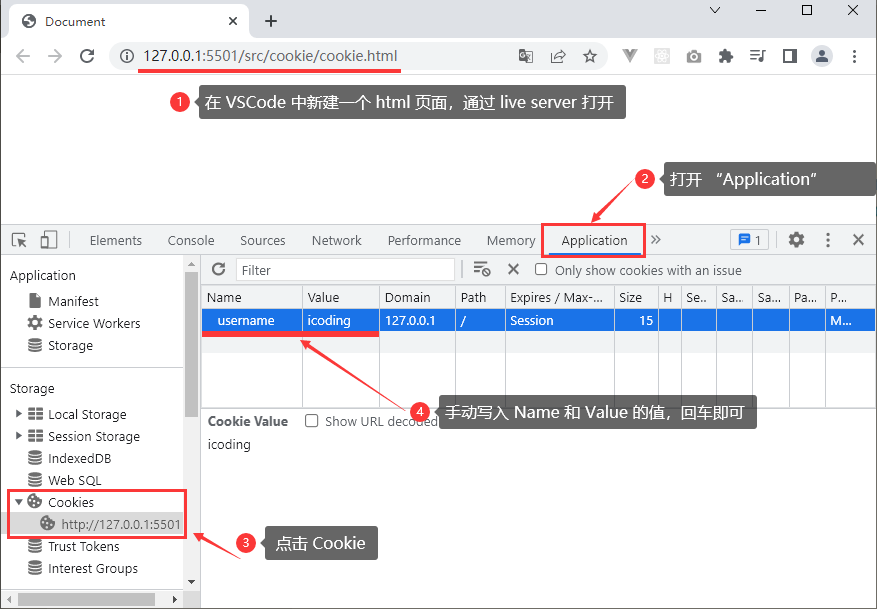Cookie信息观察
添加完成浏览器本地的 Cookie 后，再次刷新当前网页，这时就会向服务器端发送请求。
- 观察 Cookie 是否会随着请求一起发送到服务器端 ，查看开发者工具中的
“Network”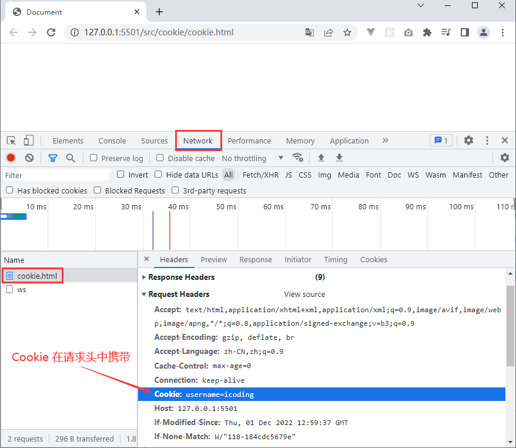
- 观察 Cookie 是否会随着请求一起发送到服务器端 ，查看开发者工具中的
注：
- 以上我们可以看到，在请求头中有一个字段 Cookie 后边就是我们之前添加的值。
- 当看到请求头中携带的 Cookie 时，说明它确实发送给了服务器端。
- 获取 Cookie
- 在控制台输入：
document.cookie; - 即 获取到的就是 “名值对” 的形式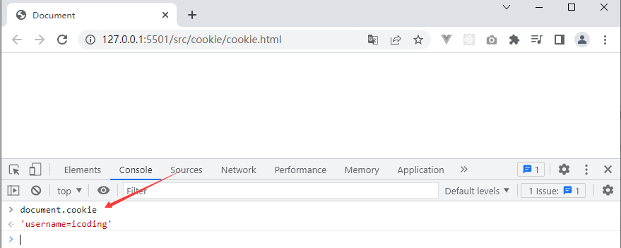
- 在控制台输入：
- Cookie 的主要作用
Cookie 主要用于以下三个方面：
- 会话状态管理
- 如用户登录状态、购物车、游戏分数或其它需要记录的信息
- 个性化设置
- 如用户自定义设置、主题和其他设置
- 浏览器行为跟踪
- 如跟踪分析用户行为等
- 会话状态管理
二、Cookie 的基本用法
这里我们主要学习浏览器端利用
JS来操作 Cookie
- 即
JavaScript写入Cookie和读取Cookie
- 写入 Cookie
- 写入 Cookie 语法
document.cookie = "键=值";
- 在浏览器中写入Cookie
//写入Cookie
ducument.cookie = "username=icoding";
document.cookie = "sex=male";
document.cookie = "age=18";
- 注意：设置多个
Cookie时，只能通过多次调用document.cookie = '键=值”的方式逐个添加，无法批量添加
- 读取 Cookie
读取 Cookie 的值是一个由名值对构成的字符串，每个名值对之间由
;（一个分号 + 一个空格）隔开
// 读取 Cookie
console.log(document.cookie); // username=icoding; sex=male; age=18
- 以上
document.cookie读取出来的是全部的Cookie，不能通过特定的名称来读取特定的值，只能一次性全部读取出来。
那么，如何根据具体的名称来读取具体的值呢 ？
- 原生的 Cookie 是没有这样方法的，需要我们自己去封装（后边会深入讲解）
三、Cookie 的属性
Cookie的名称Name和 值ValueName和Value是最重要的两个属性，创建Cookie时必须填写，其他属性可以使用默认值Cookie的名称或值如果包含非英文字母- 写入时需要使用
encodeURIComponent()编码 - 读取时使用
decodeURIComponent()解码一般名称使用英文字母，不要用中文。值可以用中文，但一定需要编码
- 写入时需要使用
// 名称和值 都是 英文
document.cookie = "username=icoding";
// 名称为英文，值为中文
document.cookie = `username=${encodeURIComponent("艾编程")}`;
// 名称和值 都是 中文
document.cookie = `${encodeURIComponent("用户名")}=${encodeURIComponent(
"艾编程"
)}`;
>
// 读取Cookie，并解码
const cookie = decodeURIComponent(document.cookie);
console.log(cookie); // 用户名=艾编程; username=艾编程
之所以使用
encodeURIComponent()方法进行编码，因为cookie在前端存储时有中文没问题。一旦传递到后端就可能获取不到值了。
expires和max-age属性- expires 和 max-age属性都可以设置 Cookie 的失效期，Cookie 的失效（到期）时间可以理解为 Cookie 生命的倒计时。
- 如果 Cookie 没有设置失效时间，这样的 Cookie 称为：“会话 Cookie”，只要关闭浏览器，Cookie 就会被浏览器清除（注意是关闭浏览器，不是单个标签页）。
- 如果设置了对应的失效时间，只有到时间后，才会被浏览器清除。
- 不设置失效时间的会话
Cookie- 会话
cookie的属性值是Session - 只要关闭浏览器，
Cookie消失
- 会话
document.cookie = "username=icoding";
- 如果 Cookie 需要长时间存储，可以设置
expires或max-age属性属性 说明 expires 设置具体的过期时间，值为 Date类型max-age 值为数字，表示当前时间 +多少秒后过期，单位是秒
- 使用
expires需要new Date()- 键值对之间要间隔
;+空格- 此时属性值就是到期时间
// expires 过期时间 值为 Date 类型
document.cookie = `username=icoding; expires=${new Date("2023-3-22 00:00:00")}`;
// max-age 表示多少秒后过期，20秒
document.cookie = `password=12345; max-age=20`;
// 需要cookie存储一个月，按 30天计算，如下
document.cookie = `age=33; max-age=${30 * 24 * 3600}`;
- 删除 Cookie
- 如果要删除一个 Cookie，我们只需要设置他的失效期，让他马上失效就好。
- 如果
max-age的值是0或负数，则 Cookie 就会失效，从浏览器中被删除 - 如果
expires的时间小于当前时间，则 Cookie 就会失效，从浏览器中被删除
// expires 过期时间 值为 Date 类型
document.cookie = `username=icoding; expires=${new Date("2023-3-22 00:00:00")}`;
// 2023-2-22 小于当前时间，当前时间 2023-2-23
document.cookie = `username=icoding; expires=${new Date("2023-2-22 00:00:00")}`;
>
// max-age属性，需要cookie存储一1天
document.cookie = `age=33; max-age=${24 * 3600 * 30}`;
// max-age=-1或0 表示删除cookie
document.cookie = "age=33;max-age=-1";
Domain属性Domain 属性指定了哪些域名可以访问该 Cookie。如果 Domain 省略未写，其默认为当前域名
- 通过 JS 添加 domain 属性，其 domain 值只能是当前域或父域
- 使用 JS 也只能读写当前域 或 父域的 Cookie ，无法读写其他域的 Cookie
当前域和父域的解读
- 当我们访问小米的
PC端网站www.mi.com或 移动端m.mi.com网站时 - 当前域：
www.mi.com和m.mi.com表示当前访问的域名，为当前域 - 父域：
.mi.com也就是上面两个域名共有的域，称为两者的父域注意：
- 在子域添加
domain为子域的cookie，另一个子域不能访问到该cookie - 在子域添加
domain为父域的cookie，另一个子域可以访问到该cookie
//在子域 www.mi.com，添加以下cookie，另一个子域m.mi.com不能访问到该cookie
document.cookie=`username=12345; domain="www.mi.com"`
>
//在子域www.mi.com，添加以下cookie，子域m.mi.com可以访问到该cookie
document.cookie=`sex=888; domain=".mi.com"`
- 所以，把
domain属性设置为父域，可以实现跨域
- Path 路径
Path属性指定了一个URL路径，限定了访问Cookie的范围（同一域名下）
如果path省略未写，其值默认为当前路径（当前文件所在文件夹路径）- 使用 JS 只能读写当前路径和上级路径的
Cookie，无法读写下级路径的Cookie - 同时在当前路径中，
path只能设置当前或上级路径，不能设置成下级路径
- 使用 JS 只能读写当前路径和上级路径的
- 创建以下文件目录结构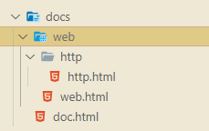
// docs/doc.html
document.cookie = `doc='doc123'; max-age=${24 * 3600}; path=/docs`;
// 上面代码等同于下面代码
// document.cookie = `doc='doc123'; max-age=${24 * 3600};`;
console.log(document.cookie); // doc='doc123'
>
// docs/web/web.html
document.cookie = `web='web123'; max-age=${24 * 3600}; path=/docs/web `;
console.log(document.cookie); // web='web123'; doc='doc123'
>
// docs/web/http/http.html
document.cookie = `http='http123';max-age=${24 * 3600}; path=/docs/web/http `;
console.log(document.cookie); // http='http123'; web='web123'; doc='doc123'
注：
/表示http://www.xxx.com/以下目录都可以访问这个 Cookie，但以上都不行/docs表示http://ww.xxx.com/docs以下目录都可以访问这个 Cookie，但以上都不行/docs/web表示http://ww.xxx.com/docs/web以下目录都可以访问这个 Cookie，但以上都不行
- 在当前路径中，path 只能设置当前或上级路径，不能设置成下级路径
// 以下代码属于 /docs/doc.html页面
>
// 错误写法 因为path不能指向当前路径的下级路径
document.cookie = `doc='doc123'; path=/doc/web`;
>
// 正确写法
document.cookie = `doc='doc1'; path=/docs`;
document.cookie = `doc='doc123'; path=/`;
- 判断是否为同一 Cookie
通过上面的学习，我们知道，只有当
Name、Domain、Path这三个字段都相同时，才是同一个Cookie
// 以下为相同Cookie
document.cookie = `doc='doc1'; path=/docs`;
document.cookie = "doc=abc"; // 其path默认值为 /docs
>
// 以下都为不同Cookie
document.cookie = `doc='doc123'; path=/docs`;
document.cookie = `doc='doc123'; path=/`;
- 在
docs目录里，/和/docs不同
- HttpOnly 属性
- 设置了
HttpOnly属性的Cookie不能通过JS去访问，禁止 JS 访问也是为了安全性考虑。 - HttpOnly 属性不能通过 JS 来设置，只能通过服务端来设置。如果我们想要看到效果，可以手动在浏览器的控制台勾选。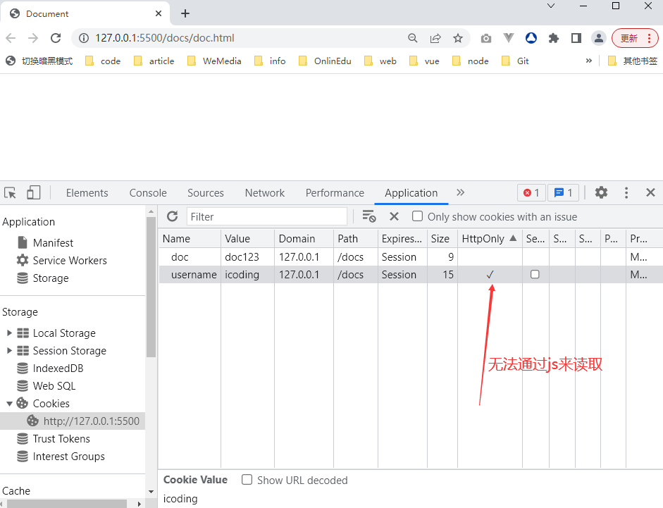
- 设置了
- 在当前页面的控制台操作
document.cookie时，只能获取到doc = doc123，说明HttpOnly属性选中时，JS是无法读取当前Cookie
Secure 安全标志
- 标记为
Secure的Cookie只能通过被HTTPS协议加密过的请求发送给服务端。它永远不会使用不安全的HTTP发送（本地主机除外）
- 标记为
什么样的 Cookie 才能发送到服务器端
Domain、Path、Secure都要满足条件，还不能过期的Cookie才能随着请求发送到服务器端
四、Cookie 的封装
前边几节中我们学习了通过
JS来写入、读取、删除 Cookie，我们在使用的过程中也发现了 Cookie 原生提供的方式都不好用。因此，我们现在开始对 Cookie 进行封装，让 Cookie 在实际开发中使用起来更方便。
- 需要封装写入 Cookie，读取Cookie，删除 Cookie 这三个功能。会用到我们前面学习过的 ES6 Module 模块的方式进行导入和导出。
- 封装 cookie
新建
cookie.js文件，封装成一个模块 ，创建一个Cookie类，添加三个静态方法，将Cookie类做为接口导出- set 方法，设置 cookie
- get 方法，通过 cookie 的 name 获取 value 值
- remove 方法，通过 cookie 的 name 删除对应的 cookie
- 模块文件
cookie.js
class Cookie {
// set方法，用来添加Cookie
// name 和 value 是必传项
// {} 对象中的属性是非必传项，这是对象字面量的新增简洁表示法
// { maxAge, domain, path, secure } = {} 设置默认值，在没有传值的情况下给 {} 对象
static set(name, value, { maxAge, domain, path, secure } = {}) {
// 对传过来的name和value编码
let cookieText = `${encodeURIComponent(name)}=${encodeURIComponent(value)}`;
// 设置失效时间
if (typeof maxAge === "number") {
cookieText += `; max-age=${maxAge}`;
}
// 设置访问域
if (domain) {
cookieText += `; domain=${domain}`;
}
// 设置路径
if (path) {
cookieText += `; path=${path}`;
}
// 设置安全标志
if (secure) {
cookieText += `; secure=${secure}`;
}
document.cookie = cookieText;
}
// get方法，用来获取Cookie
// 原来通过 document.cookie 获取的 Cookie 值是：
// "username=icoding; age=20; sex=male"
// 对于以上有规律的字符串可以使用 split("; ") 分割拆分成一个数组，分割后如下
// 得到一个数组 ['username=icoding', 'age=20', 'sex=male']
static get(name) {
// 将获到的name解码
name = encodeURIComponent(name);
// 将读取到的cookie信息字符串，通过"; "分割成一个数组
let cookies = document.cookie.split("; ");
// 利用for...of来遍历数组
for (let item of cookies) {
const [cookieName, cookieValue] = item.split("=");
if (cookieName === name) {
// 解码
return decodeURIComponent(cookieValue);
}
}
// 如果最后没有找到
return;
}
// remove方法，用来删除Cookie
// 根据 name，domain 和 path 删除 Cookie
// name 必传参数
// domain 和 path 可选项
static remove(name, { domain, path } = {}) {
this.set(name, "", { domain, path, maxAge: -1 });
}
}
// 默认导出
export default Cookie;
- 新建一个
cookie.html文件，导入封装好的cookie模块，调用对应的方法
><script type="module">
// 导入 Cookie 模块
import Cookie from "../Cookie.js";
// 设置Cookie
Cookie.set("username", "清心", { maxAge: 10 });
Cookie.set("age", 33, { path: "/" });
Cookie.set("sex", "女", { secure: "secure" });
>
// 获取Cookie
console.log(Cookie.get("username"));
console.log(Cookie.get("age"));
console.log(Cookie.get("sex"));
>
// 删除Cookie
Cookie.remove("age", { path: "/" });
Cookie.remove("sex");
></script>
五、Cookie 的注意事项
在实际开发中需要注意，前后端都可以写入和获取
Cookie，Cookie有数量限制，Cookie有大小限制。
- Cookie 有数量限制
每个域名下的 Cookie 数量有限，具体有多少无法确定，得看浏览器，每个都会不一样
- 以下数据也只是参考，不能作为实际数据来用，因为浏览器在更新，相关限制也会出现变动
Cookie 限制 Edge Opera Firefox Safari Chrome Cookie 个数（每个域） 50 个 180 个 150 个 没有个数限制 没有个数限制 Cookie 总大小（字节数） 4095 4096 4097 4097 4097
- 以下数据也只是参考，不能作为实际数据来用，因为浏览器在更新，相关限制也会出现变动
注：
- 浏览器 Cookie 的数量限制只跟 每个域名下 Cookie 数量有关系
- 当超过单个域名限制之后，再设置 Cookie ，浏览器就会清除以前设置的 Cookie
因此，在实际开发中不要过多的设置 Cookie ，要考虑它的数量限制，防止发生无法预期的后果
Cookie 有大小限制
Cookie 的存储容量很小，最多只有
4KB左右（具体在以上表格中），这里对容量的限制不是针对一个 Cookie，是针对一个域名下的所有Cookie而言在实际开发中一般是遇不到超出 Cookie 的数量和大小限制的，我们正常也不会设置那么多的 Cookie。
- 如果真的设置了很多 Cookie，就需要考虑下 Cookie 的限制了。
前后端都可以写入 和 获取 Cookie
- 不仅仅前端可以创建 Cookie，随着请求发送到服务器端
- 后端同样可以创建 Cookie ，通过响应发送到前端来，之后的请求总会携带 Cookie 发送到后端
- 到底 Cookie 是从前端来创建还是后端来创建，就需要根据具体的业务需求来了
六、服务端创建 Cookie
我们通过图解和代码来帮助大家理解服务端创建 Cookie 的过程。服务端是后台开发人员需要掌握的，我们这个阶段只需要先了解就好，因为需要操作服务器。
- 所以我们需要简单学习下 node，用来搭建一个简单的 HTTP 服务器。
- 什么是
Node.jsNode.js是一个基于 Chrome V8 引擎的 JavaScript 运行时环境。Node.js为 JavaScript 提供了在服务端运行的环境，使得 JavaScript 也能开发服务端的程序，前后端统一语言，统一模型的梦想得以实现
Node.js 2009 年诞生，2015 到 2016 左右在中国就火起来了，Node 火了之后带来了连锁反应。
2016 年前后，以 webpack 为代表的 Node.js 工作流工具 使前端开发的开发形式产生了翻天覆地的变化。并且，随着
Vue / React的诞生，使前端开发进入了框架时代。- 在今天，可以说前端开发 “上天入地，无所不能”：PC 端 web 开发、移动 web 开发、APP 开发、小程序开发、服务端开发等等都能搞定。
我们日常听到
Node.js时，要注意区分他到底说的是 平台 还是Node.js语言，因此我们讲 Node.js 有两个层面的含义：
Node.js是个平台或工具，即在 Node.js 平台上安装模块或包，类似于前端在浏览器上安装插件一样Node.js语言 = 后端 JavaScript = ECMAScript + IO + File + … 等服务端的操作我们前端常说的
Node更多是指如何在Node.js平台上安装模块或包，类似前端在浏览器上安装插件一样。因此，大家在日常开发中会用到在
Node.js平台上安装模块或包， 这只是使用了Node.js平台，并不代表你就懂Node.js语言了（Node.js语言本质上它就类似PHP、Python、Perl、Ruby等服务端语言，包括Java这些服务端的语言能干的Node.js都能干，非常强大 ），这个一定要搞清楚，务必盲目的自信，避免闹笑话。
- 但本节课的案例中为了帮助大家更好的理解 Cookie 的前后交互，会简单涉及
Node.js语言相关内容，大家不要深究，只做了解即可。
node 的安装
- Node.js官方下载地址
- 选择最新稳定版，根据自己的操作系统选择对应的下载地址
- 下载完成后，直接下一步，默认安装即可
检测是否安装成功及版本号
在 window 的 cmd 命令窗口，输入
node -v- 如果需要切到
D盘，输入D: - 安装 node 时，会自动安装 npm , npm 是 node.js 的包管理器
- 如果需要切到
>检测 node 是否安装及版本，正常显示版本号说明已经安装相应的版本
node -v
>
>检测 npm 是否安装及版本，正常显示版本号说明已经安装相应的版本
npm -v
- node 搭建服务器
创建
server.js文件- 文件内容如下
// 加载Node.js自带的http模块，http模块主要用来创建HTTP服务器
const http = require("http");
// 创建HTTP服务器 回调函数中的request用来接受请求数据，response用来处理响应数据
http
.createServer(function (request, response) {
// 设置响应头，解决中文乱码问题
response.writeHead(200, {
// 返回内容的类型和编码
"Content-type": "text/plain;charset=utf-8",
});
// response.write方法向前端返回数据，该方法可调用多次,多次调用的数据会被拼接到一起返回
response.write("hello");
response.write("world");
// 必须调用response.end方法结束请求，否则前端会一直处于等待状态，
// response.end方法也可以用来向前端返回数据
response.end("发送完，结束");
})
.listen(8886); // 指定HTTP服务器监听的端口号 四位数字
>
console.log("Server running at http://127.0.0.1:8886");
运行流程
- 执行程序，在 VSCode 的终端命令中运行
node server.js命令来执行程序，程序启动成功后，在地址栏中输入http://127.0.0.1:8886回车，就可以看到返回的内容。- 返回上级目录，在 VSCode 的终端命令中运行
cd ../回车- 切换到下级目录，在 VSCode 的终端命令中运行
cd 目录名回车 如：cd Desktop/test- 终止程序执行，使用快捷键
ctrl + C
常见的返回数据类型（MIME 类型）
MIME类型就是设定某种扩展名的文件用一种应用程序来打开的方式类型，当该扩展名文件被访问的时候，浏览器会自动使用指定应用程序来打开
- 多用于指定一些客户端自定义的文件名，以及一些媒体文件打开方式。
- 普通文本：
text/plain- JS 代码：
application/javascript- HTML 代码：
text/html- JSON 类型：
application/json- 图片类型：
image/gif 、image/jpeg、image/png- 设置编码的格式：
charset = utf-8
- 服务端 Cookie 的创建过程
服务端在响应头中设置
Set-Cookie选项，然后发送到浏览器（客户端），浏览器对应的数据存储Cookie中，并在下次向同一服务器再发起请求时携带并发送到服务器上。
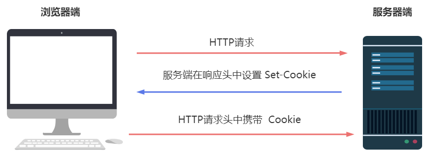
- 创建过程解析
- 当前端（浏览器端）第一次发送 HTTP 请求时，服务端收到 HTTP 请求后，服务端可以在响应头里面添加一个或多个
Set-Cookie选项。 - 浏览器收到响应后会将接受的
Set-Cookie中的数据保存在浏览器的Cookie中。 - 当下一次前端（浏览器端）再次向服务端发送 HTTP 请求时，会将其放在 HTTP 请求头的
Cookie中，发送到服务端。服务端收到这个数据后，会拿这个数据来做校验….
- 当前端（浏览器端）第一次发送 HTTP 请求时，服务端收到 HTTP 请求后，服务端可以在响应头里面添加一个或多个
- 代码演示 Cookie 创建过程
//加载Node.js自带的http模块，http模块主要用来创建HTTP服务器
const http = require("http");
//http.createServer()方法创建服务器
//函数通过 request, response 参数来接收和响应数据。
http.createServer(function(request,response){
//获取请求端发来的数据
const cookie=request.headers.cookie;
// console.info(cookie);
//设置响应头，解决中文乱码问题
response.writeHead(200,{
//返回内容的类型和编码
"Content-type":"text/plain;charset=utf-8",
"Set-Cookie":["username=hermia"],
});
//响应体内容：
//response.write方法向前端返回数据
//该方法可多次调用，多次调用的数据会被拼接到一起返回
if(cookie){
response.write("收到你的cookie了");
>
}else{
response.write("你的身份不合格");
}
//必须调用response.end方法结束请求，否则前端一直会处于等待状态，response.end方法也可以用来向前端发送数据
response.end();
}).listen(8888);//指定HTTP服务器监听的端口号，四位数
console.log("Server running at http://127.0.0.1:8888");
运行流程
- 先安装 node，然后在一个文件夹中打开 VSCode，在 VSCode 中创建
server.js文件，文件内容如上面代码。- 然后在终端执行
node server.js命令运行程序，程序启动成功后，在浏览器地址栏输入：http://127.0.0.1:8888/就可以向服务端发起Http请求，同时服务端响应内容”你的身份不合格”。- 第一次向
http://127.0.0.1:8888/发起请求时，请求头中并没有Cookie信息，服务端接收请求后，在响应头中设置了Set-Cookie，所以响应头信息中有Set-Cookie: username = hermia信息。这时候浏览器会把响应头Set-Cookie中的信息，保存在浏览器的Cookie中。- 第二次向
http://127.0.0.1:8888/发送请求时，请求头中携带了Set-Cookie: username = hermia信息，同时服务端读取到请求头中的Cookie，并在服务端的终端打印”收到你的cookie了”- 在当前页面中，打开控制台，选择
Network面板，然后刷新浏览器，然后按下图操作，就能看到整个过程。
七、Cookie 在实际开发中的实际应用
- Cookie 实现中英文网站语言切换
- 当用户第一次访问网站时，默认显示的是中文网站
- 如果点击了页面的英文切换按扭，则切换到英文网站。下次打开网站后显示的就是英文版的。
实现原理
- 第一次发送请求，服务端会判断请求头中是否有对应的
Cookie，如果没有，则默认发送的中文版的网站 - 点击页面中英文按扭，在 Cookie 中添加
language=en; max-age=${365*24*3600}"，然后利用window.location='/'重新向后端发送一次请求。 - 点击页面中中文按扭，在 Cookie 中添加
language=cn; max-age=${365*24*3600}"，然后利用window.location='/'重新向后端发送一次请求 - 服务器接收请求头中的 Cookie，判断 cookie 值，如是为en,则发送英文网站，否则发送中文。随后的每次请求，请求头中都会携带 Cookie，服务端都会根据请求头中的 Cookie 来判断是发送中文网站还是英文网站
- 第一次发送请求，服务端会判断请求头中是否有对应的
代码实现步骤
创建两个 HTML 页面
en.html表示英文网站cn.html表示中文网站
在页面中添加对应的中英文切换按扭，点击对应的按扭，就创建对应的 Cookie 存入到浏览器中，然后利用window.location = '/'重新向后端发送一次请求，后端会根据这一次请求，响应对应的内容
cn.html页面
><body>
> <button id="cn">中文</button>
> <button id="en">英文</button>
> 中国欢迎你！
> <script>
> const cn = document.getElementById("cn");
> const en = document.getElementById("en");
> cn.addEventListener("click", () => {
> //创建Cookie
> document.cookie = `language=cn; max-age=${365 * 24 * 3600}`;
> window.location = "/";
> });
>
> en.addEventListener("click", () => {
> //创建Cookie
> document.cookie = `language=en; max-age=${365 * 24 * 3600}`;
> window.location = "/";
> });
> </script>
></body>
en.html页面
><body>
> <button id="cn">中文</button>
> <button id="en">English</button>
> Welcome to China!
> <script>
> const cn = document.getElementById("cn");
> const en = document.getElementById("en");
> cn.addEventListener("click", () => {
> //创建Cookie
> document.cookie = `language=cn; max-age=${365 * 24 * 3600}`;
> window.location = "/";
> });
>
> en.addEventListener("click", () => {
> //创建Cookie
> document.cookie = `language=en; max-age=${365 * 24 * 3600}`;
> window.location = "/";
> });
> </script>
></body>
- 用
node创建服务器，具体代码如下
// http模块，主要用来搭建 HTTP 服务器
const http = require("http");
// 文件操作模块
const fs = require("fs");
>
// 创建服务器
http
.createServer((request, response) => {
// 获取请求体中的cookie
const cookie = request.headers.cookie;
const language = cookie ? cookie.split("=")[1] : "cn";
let html = ""; // 保存响应体内容
// 根据Cookie的内容，来决定发送的内容
if (language === "en") {
html = fs.readFileSync("./en.html");
} else {
html = fs.readFileSync("./cn.html");
}
>
// 设置响应头信息 200 表示状态响应成功，
// Content-Type 响应主体的内容类型为html文件，编码格式utf-8
response.writeHead(200, {
"Content-Type": "text/html;charset=utf-8",
});
// 发送响应体内容
response.end(html);
})
.listen(1128); // 监听端口
>
console.log("Server running at http://127.0.0.1:1128/");
- 升级版
在上面的版本中，我们没有办法在
cn.html和en.html页面使用模块化加载Cookie.js来操作 Cookie，本质是因为http://127.0.0.1:8889/Cookie请求失败，后端并没有针对这个请求做相关的响应（也就是返回Cookie.js文件）。- 所以我们需要根据用户的请求路径来响应不同的内容
cn.html页面
><button id="cn">中文</button>
><button id="en">英文</button>
>我爱你
>
><script type="module">
> // 模块化导入JS
> import Cookie from "./Cookie";
> const cn = document.getElementById("cn");
> const en = document.getElementById("en");
> cn.addEventListener("click", () => {
> //创建Cookie
> Cookie.set("language", "cn", { maxAge: 365 * 24 * 3600 });
> // 重新加载页面
> window.location = "/";
> });
>
> en.addEventListener("click", () => {
> //创建Cookie
> Cookie.set("language", "en", { maxAge: 365 * 24 * 3600 });
> window.location = "/";
> });
></script>
en.html页面
><button id="cn">中文</button>
><button id="en">English</button>
>I love you
>
><script type="module">
> // 模块化导入JS
> import Cookie from "./Cookie";
> const cn = document.getElementById("cn");
> const en = document.getElementById("en");
> cn.addEventListener("click", () => {
> //创建Cookie
> Cookie.set("language", "cn", { maxAge: 365 * 24 * 3600 });
> // 重新加载页面
> window.location = "/";
> });
>
> en.addEventListener("click", () => {
> //创建Cookie
> Cookie.set("language", "en", { maxAge: 365 * 24 * 3600 });
> // 重新加载页面
> window.location = "/";
> });
></script>
server.js页面
// http模块，主要用来搭建 HTTP 服务器
const http = require("http");
// 文件操作模块
const fs = require("fs");
>
// 创建服务器
http
.createServer((request, response) => {
// 请求根目录
if (request.url === "/") {
// 获取请求体中的cookie
const cookie = request.headers.cookie;
const language = cookie ? cookie.split("=")[1] : "cn";
let html = ""; // 保存响应内容体
if (language === "en") {
html = fs.readFileSync("./en.html");
} else {
html = fs.readFileSync("./cn.html");
}
>
// 设置响应头信息 200 表示状态响应成功，
// Content-Type 响应主体的内容类型为html文件，编码格式utf-8
response.writeHead(200, {
"Content-Type": "text/html;charset=utf-8",
});
// 发送响应体内容
response.end(html);
>
//----------------------------------------------------------------
// 请求 /Cookie目录
} else if (request.url === "/Cookie") {
// 读取JS文件
const js = fs.readFileSync("./Cookie.js");
// 设置响应头
response.writeHead(200, {
"Content-Type": "application/javascript;charset=utf-8",
});
// 发送响应体内容
response.end(js);
}
})
.listen(8889); // 监听端口
>
console.log("Server running at http://127.0.0.1:8889/");
八、LocalStorage 简介
localStorage是什么有一些数据确实是需要存储在本地，但它却不需要发送到服务器端，所以它并不适合放在 Cookie 中。那么，
localStorage就是一个不错的选择。localStorage也是一种浏览器存储数据的方式（本地存储），它只存储在本地，不会发送到服务器端（不会像 Cookie 那样发送到服务器端）。这样一来
- 对于那些你既想存储在用户本地，又不想发送到服务器端的数据，就可以存储在
localStorage中 - 而那些既希望它存储在本地，又希望它能随着请求发送到服务器端的数据就可以存储在
Cookie中
- 对于那些你既想存储在用户本地，又不想发送到服务器端的数据，就可以存储在
在浏览器中操作
localStoragelocalStorage也是按域名来存储的，在浏览器可直接查看。Local Storage中的数据是以键值对的形式存储的- 如下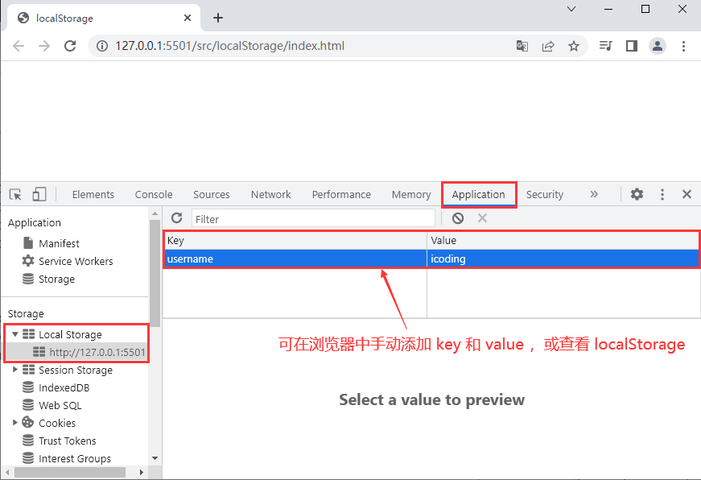
九、LocalStorage 的基本用法
我们可以通过
window.localStorage对象来操作浏览器中的Local Storage数据。
localStorage对象通过
window.localStorage对象可以获取浏览器Local Storage中所有的项的数据
// 获取本地所有 Local Storage
console.log(localStorage);
>
// 控制台输出结果： Storage {font-size: '12px', color: '#666', background-color: 'skyblue', length: 3}
localStorage对象的length属性表示存在的 key 和 value 键值对有多少项。
console.log(localStorage.length); // 3
- localStorage 对象的方法
- 其中
window.localStorage对象身上提供了以下方法来操作数据。
- 其中
| 方法 | 说明 |
|---|---|
| setItem(key,value) | 为本地的 Local Storage 添加一个数据项。 |
| getItem(key) | 根据对应的键名，获取对应的键值 |
| removeItem(key) | 根据键名，移除指定项 |
| clear() | 移除所有的 Local Storage 项 |
- setItem(key,value)
- setItem(key,value) 为本地的 Local Storage 添加一个数据项。
localStorage.setItem("font-size", "12px");
localStorage.setItem("color", "#666");
localStorage.setItem("background-color", "skyblue");
- getItem(key)
- getItem(key)根据对应的键名，获取对应的键值，获取不存在的会返回
null
- getItem(key)根据对应的键名，获取对应的键值，获取不存在的会返回
localStorage.getItem("font-size"); // "12px"
localStorage.getItem("color"); // "#666"
localStorage.getItem("background-color"); // "skyblue"
- removeItem(key)
- removeItem(key)方法根据键名 key，移除指定项，如果删除不存在的 key，不会报错。这个方法没有返回值或返回
undefined
- removeItem(key)方法根据键名 key，移除指定项，如果删除不存在的 key，不会报错。这个方法没有返回值或返回
// 移除（删除）不存在的 key，不报错
localStorage.removeItem("username");
// 移除存在的指定项
localStorage.removeItem("font-size");
localStorage.removeItem("color");
- clear()
- clear()方法用来移除所有的
localStorage数据项
- clear()方法用来移除所有的
// 移除所有
localStorage.clear();
>
// 打印输入 localStorage
console.log(localStorage); // Storage {length: 0}
十、localStorage 的注意事项
- localStorage 的存储期限
localStorage 是持久化的本地存储，除非手动清除（如 通过 JS 删除或清除浏览器缓存）否则，数据永远不会过期的。
- 与 localStorage 对应的是 sessionStorage
- sessionStorage 当前会话结束（如：关闭浏览器）的时候，sessionStorage 中的数据会被清空
- 操作 sessionStorage 的方法和操作 localStorage 的方法一模一样
// 添加项
sessionStorage.setItem("font-size", "12px");
sessionStorage.setItem("color", "#666");
sessionStorage.setItem("background-color", "skyblue");
>
// 打印sessionStorage
console.log(sessionStorage);
>
// 获取指定项
console.log(sessionStorage.getItem("font-size"));
>
// 移除指定项
sessionStorage.removeItem("font-size");
sessionStorage.removeItem("color");
>
// 移除所有项
sessionStorage.clear();
- localStorage 和 sessionStorage 什么时候用 ？
- 如需要永久化的存储一个数据，可保存在
localStorage中 - 需要会话结束（关闭浏览器）就消失，可保存在
sessionStorage中
- 如需要永久化的存储一个数据，可保存在
不同域名下能否共用 localStorage
localStorage 是按域名来存储的，即同一个域名下的所有页面都可以访问该域名下的
localStorage但不同的域名下是不能共用 localStorage 的
- 我们自己域名下的 localStorage 别的域名是无法访问的，别的域名下的 localStorage 我们自己的域名也是不能访问的。
localStorage 的大小限制
单个域名下的localStorage 总大小有限制（不超过
5MB），但没有单个大小的限制。而 Cookie 是单个大小的限制，也跟浏览器有关系，不同浏览器大小限制不同。- 正常情况下是不会存满的，使用中不要超过限制即可，超过了会造成数据丢失。
localStorage 键和值的类型
- localStorage 存储的键和值只能是字符串类型
- 不是字符串类型，也会先转化成字符串类型再存进去（localStorage 会自动转的，不需要手动转换）
// key传入的是一个对象
localStorage.setItem({}, "hello");
console.log(localStorage.getItem("[object Object]")); // hello
>
// value传入的是一个对象
localStorage.setItem("skinTheme", {
"font-size": "12px",
color: "#666",
"background-color": "skyblue",
});
console.log(localStorage);
// 打印结果 Storage {skinTheme: '[object Object]', [object Object]: 'hello', length: 2}
十一、localStorage 的封装
- 因为 localStorage 的键和值只能是字符串类型的
- 但很多时候我们希望保存的 value 值是一个对象，根据对应的 key 来取值时，也能取出对应的对象。
这就需要我们人为的来封装一个类来实现。
- 封装 storage 对象
新建
storage.js文件，封装成一个模块 ，创建一个 storage 对象，添加三个方法，将 storage 对象做为默认接口导出- set 方法，添加一项数据
- get 方法，通过指定的 key 来获取数据
- remove 方法，根据 key 来移除指定的数据项
- has 方法，根据 key 来判断是否存在指定项
- clear() 清除所有项
// storage.js模块 默认导出一个对象
export default {
// 根据key value 添加一项数据
set(key, value) {
if (typeof value === "object") {
value = JSON.stringify(value); // 将对象转成JSON字符串
}
localStorage.setItem(key, value);
},
// 根据key来获取指定项
get(key) {
const data = localStorage.getItem(key);
try {
return JSON.parse(data); // 将字符串转换为对象
} catch (err) {
return data;
}
},
// 根据key来删除指定项
remove(key) {
localStorage.removeItem(key);
},
>
// 根据key来判断是否存在指定项
has(key) {
const value = localStorage.getItem(key);
return value ? true : false;
},
>
// clear() 清除所有项
clear() {
localStorage.clear();
},
};
- 在
get(key)时，需要将字符串转成对象，如果key=undefined，就会报错，所以用try...catch捕获错误，直接返回value值
- 新建
index.html页面，添加如下代码，测试封装好的模块
><script type="module">
import storage from "./storage.js";
// 添加
storage.set("skinTheme", {
"font-size": "12px",
color: "#666",
"background-color": "skyblue",
});
storage.set("history", [1, 2, 3, 4, 5]);
storage.set("username", "清心");
storage.set("空", null);
>
// 获取
console.log(storage.get("username")); // 清心
console.log(storage.get("history")); // [1, 2, 3, 4, 5]
>
// 移除
storage.remove("空");
storage.remove("history");
>
// 判断是否存在
console.log(storage.has("skinTheme")); // true
console.log(storage.has("ab")); // false
></script>
十二、localStorage 在实际开发中的应用
案例一：添加搜索历史记录
当用户在搜索框搜索对应的关键字时，会把用户搜索过的关键字保存在搜索框下面，并且只限定能放
6个，超过了就删除最早加入的，当然也可以手动删除不想要的。
- HTML布局
><style>
input,
button {
box-sizing: border-box;
outline: none;
}
.search {
width: 600px;
margin: 50px auto;
}
.search-wrap {
display: flex;
height: 70px;
}
.search-input {
width: 680px;
height: 50px;
border: 1px solid #ddd;
border-right: 0px;
border-radius: 5px 0 0 5px;
}
.search-input::placeholder {
font-size: 20px;
}
.search-button {
width: 120px;
height: 50px;
background-color: orange;
border: none;
color: #fff;
font-size: 24px;
cursor: pointer;
}
>
.keywords-wrap span {
display: inline-block;
background-color: #ddd;
padding: 5px 10px;
border-radius: 2px;
margin: 5px;
position: relative;
cursor: pointer;
}
.keywords-wrap span i {
display: block;
width: 15px;
height: 15px;
position: absolute;
right: -2px;
top: -2px;
background-color: orange;
border-radius: 10px;
font-size: 12px;
text-align: center;
line-height: 10px;
color: #fff;
display: none;
cursor: pointer;
}
.keywords-wrap span:hover i {
display: block;
}
></style>
><body>
> <div class="search">
> <div class="search-wrap">
> <input type="text" placeholder="请输入搜索关键字" class="search-input" />
> <button class="search-button">搜索</button>
> </div>
>
> <div class="keywords-wrap">
> <!--
> <span>漂亮的包包<i>x</i></span>
> <span>衣服<i>x</i></span>
> <span>女性化妆品 <i>x</i></span>
> <span>洗面奶<i>x</i></span>
> <span>小米手机 <i>x</i></span>
> <span>图解HTTP<i>x</i></span>
> <span>你不知道的Javascript<i>x</i></span>
> <span>ES6标准入门<i>x</i></span>
> -->
> </div>
> </div>
></body>
- JS 代码实现逻辑
- 第一步：操作输入框中的关键词
给搜索按钮添加点击事件，获取关键字，创建对象
- 获取 DOM 元素：搜索框、搜索按扭、关键词容器
- 如果搜索框有内容，就创建一个对象，里面保存关键词的信息，
obj={id:id值,keyword:value} - 定义一个数组
let keywordsArr = []，用来保存每次搜索的关键字对象 - 创建对象后，将对象添加进数组
- 判断搜索框有内容：去掉前后空格
id值通过时间戳创建唯一的id值
将关键词插入到页面
- 新建
span节点，将关键词、删除按钮添加到节点中 - 给
span设置自定义属性data-id，保存和关键词一样的id，便于删除
如果数据长度超出限制： - 将关键词容器的第一个节点删除
- 将数组中的第一个元素删除
将对象保存到
localStorage中- 使用
storage模块，将数组中对应数据存入storage用户输入内容，点击搜索后，清空搜素框：在获取输入框的
value值之后，将其设置为空内容
//导入模块
import storage from "./storage.js";
// 获取输入框和搜索按扭
const searchInput = document.querySelector(".search-input");
const searchButton = document.querySelector(".search-button");
// 获取（历史搜索）存放关键词容器
const keywords = document.querySelector(".keywords-wrap");
// 用来保存关键字的数组
let keywordsArr = [];
>
// 点击搜索按扭
searchButton.addEventListener("click", () => {
let value = searchInput.value;
searchInput.value = "";//获取value后，清空搜索框
// 如果内容去掉前后空格，还有内容，将内容添加到页面中
if (value.trim()) {
// 创建一条数据
const obj = {
id: new Date().getTime(),
keyword: value,
};
// 创建span标签
const span = document.createElement("span");
span.dataset.id = obj.id; // 添加唯一标识
span.innerHTML = `${value}<i>x</i>`;
// span标签添加到页面
keywords.appendChild(span);
// 将内容添加到数组的尾部保存起来
>
keywordsArr.push(obj);
// 因为记录的数据不能超过6条，所以要判断，如果超过，则删除第一条
if (keywordsArr.length > 6) {
// 数组中将第一个元素删除
keywordsArr.shift();
// DOM中也将第一个元素删除
keywords.removeChild(keywords.children[0]);
}
// 将数组中对应的数据存入到localStorage中
storage.set("history", keywordsArr);
}
});
- 第二步：读取
localStorage中的数据，显示在页面中- 当关闭页面后，再次打开，搜索框下的内容就消失了，所以需要每次打开页面时，把
localStorage中存储的数据取出来插入到页面中- 通过
storage模块的get方法将history拿出来虽然我们存进去的是一个数组，但取出来的是一个对象，模块里用
Json做了处理
- 通过
- 这里要考虑第一次打开页面时，localStorage 中还没有存任何数据，所以取出的 localStorage 数据可能为
undefined，所以需要判断数据是否存在- 如果存在，就遍历取出的数据，生成 DOM 插入到页面
- 当关闭页面后，再次打开，搜索框下的内容就消失了，所以需要每次打开页面时，把
showKeyWords();
function showKeyWords() {
//获取history
const storageDate = storage.get("history"); //拿到的是一个对象
//判断数据是否存在
if (storage) {
//将数据存入数组
keywordArr = storageDate;
//for...of遍历对象 将其插入到页面中
for (let { id, keyword } of storageDate) {
const span = document.createElement("span");
//给span添加和id相同的唯一标识
span.dataset.id = id;
span.innerHTML = `${keyword}<i>x</x>`;
//将内容生成DOM插入页面
keywrap.appendChild(span);
}
}
}
- 第三步：点击关键字右侧顶部的删除按扭，删除对应关键字
利用事件代理，给
keywords-wrap添加点击事件，如果点击的元素是<i>标签，就- 删除对应关键词的DOM标签
- 通过i标签的父元素的父元素删除
- 更新
localStorage；为了下一次打开的时候不出现已删除关键词，就得把storage里面的数据更新；而storage里面的数据是通过数组存进来的，所以先更新数组，再用新数组更新localStorage- 删除数组中的数据：获取i标签的父元素对应的id值；遍历数组，找到有相同id的对象，获取其下标，根据下标删除
- 重新给
localStorage赋值
- 删除对应关键词的DOM标签
案例2：更改网站皮肤
大家可以自己去实现，可以参考 MDN 官方网站给出的实例
https://mdn.github.io/dom-examples/web-storage/
面试题
- Cookie、localStorage、sessionStorage 的对比（面试题）
对比项 Cookie LocalStorage sessionStorage 存储大小 4K 5M 5M 有效期 手动设置 无 浏览器窗口关闭 存储位置 浏览器 浏览器 浏览器 与请求一起发送 是 否 否 访问限止 子域可以访问自己和父域中的 Cookie 同域下都可以访问 只限当前窗口